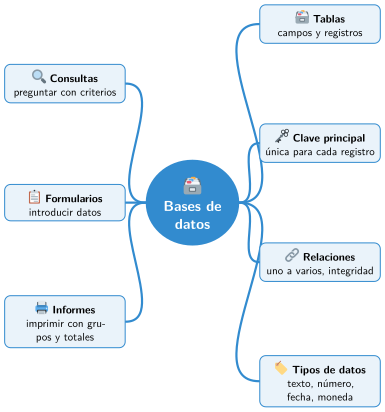

Bloque III · Datos: hojas de cálculo y bases de datos
UD06 Bases de datos ofimáticas
RA5Realiza operaciones de manipulación de datos en bases de datos ofimáticas tipo.
Sesiones
- Sesión 6.1 Qué es una base de datos relacional
- Sesión 6.2 Tablas y registros
- Sesión 6.3 Consultas, formularios e informes con asistente
Al terminar la unidad
- 🛠️ Práctica con las herramientas
- 📝 Repaso de la unidad
- ✅ Autoevaluación
- 🎯 Situaciones de aprendizaje del bloque
Mapa mental de la unidad

✏️ Repasa la unidad con el mapa: tapa una rama y explica en voz alta lo que pone.